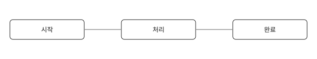

이 영역에 요청 배경과 해결할 문제를 한두 문장으로 적습니다.
이번 범위와 비범위를 구분해 적습니다.
확인된 사실 기존 정책 제안 미정 확인 필요
상태 태그는 사실·정책·제안·미정을 한눈에 구분하기 위한 용도이며, 필요한 곳에만 사용합니다.

| 구분 | 항목 | 내용 |
|---|---|---|
| 조건 | 노출 대상 | 조건에 맞는 항목만 노출한다. |
| 동작 | 선택 후 저장 | 저장 시 필수 항목을 확인하고, 누락되면 안내 후 중단한다. |
| 예외 | 처리 실패 | 실패 사유를 안내하고 재시도할 수 있게 한다. |
개발 확인 — 개발팀에 확인이 필요한 항목을 이 영역에 모읍니다.